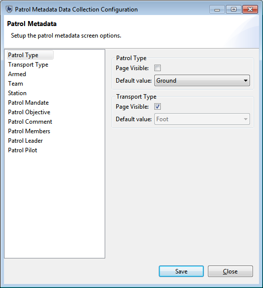

Software Requirements:
You must have the CyberTracker Desktop application installed on your computer for the plug-in to function correctly. CyberTracker version 3.319 or higher is required.
The latest stable release of CyberTracker is available here: http://cybertracker.org/software/free-download
To install the SMART-CyberTracker Plug-in, simply:
1) Unzip the CyberTracker zip file after downloading it from the SMART website.
2) Copy the "plugins" folder from that zip file and paste it into your SMART install directory (where your smart.exe file is) so that the two "plugins" are merged.
3) When you run SMART the next time, you will see a "CyberTracker" menu to confirm that the plug-in is installed correctly.
Selecting the "CyberTracker" -> "Properties" menu option will show you a number of properties that can be configured to modify the behavior of the exported mobile application. The "Application Name" is what the application will be called on the mobile device. It should be noted that exporting an application with the same name more than once will overwrite any existing CyberTracker data collection applications already on the device with the same name.
Hover your mouse over any property name or field to get a more detailed description of how it will affect the output application.
Selecting the "CyberTracker" -> "Patrol Screens Configuration" menu option will allow you to customize the meta data collections screens that are shown on the mobile application at the beggining of each Patrol. The 11 meta-data collection screens are shown at the left of the screen; select which one you would like to edit and find the relevant details on the right-hand side.
Uncheck "Page Visible" to disable the page from showing to the data collection users for any pages that you wish to exclude. You can also select a default value to set that option for all patrols if you wish. For example, on "Patrol Type" you can uncheck "Page Visible" and then select "Ground". Once that application is exported, and data is collected and uploaded back to the database, all the patrols from that device will have the patrol type set to "Ground".

To export your data collection application to a mobile device:

To import data back into your database from a mobile device run SMART, plug the mobile device into your computer, log into your CA and then do the following: